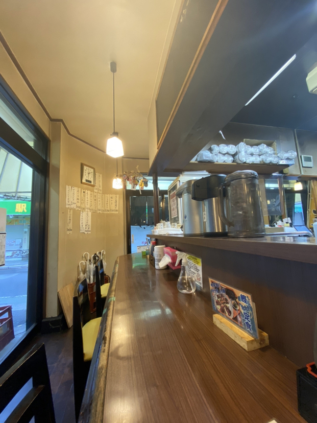
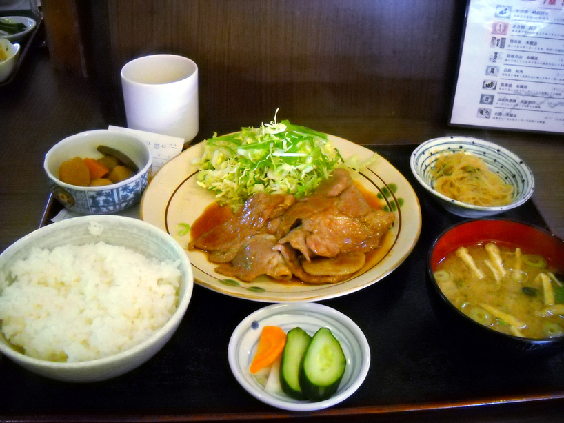

[東京 綾瀬]
かあちゃん

おすすめのポイント
千代田線綾瀬駅から、歩いて２分ほどのところにある、昔ながらの定食屋です。
店の外観からは、少し入りづらいという印象を持つかもしれません。
しかし、実際に入ってみるとどこか懐かしい場所のように感じられて、まさに「かあちゃん」という店名にしっくりきます。
ご年配の女性の方が数人で切り盛りをしているようでした。
店内は、カウンター席とテーブル席があり、カウンター席がメインです。

メニューには、単品料理と定食があり、そのどれもが手作りで、心が温まる美味しい料理ばかりです。
店員さん、いや、かあちゃんも、優しい笑顔で迎えてくれて、元気がもらえます！

是非、綾瀬近辺にお出かけの際には、立ち寄ってみてはいかがでしょうか。
お店の情報
| 店名 | かあちゃん |
|---|---|
| 住所 | 東京都足立区綾瀬2-26-8 |
| アクセス | 地下鉄千代田線綾瀬駅から190m（徒歩２分） |
| 電話 | 03-6662-4333 |
| 営業時間 | 06:00～22:30(L.O) |
| 定休日 | 年中無休
|
| 予算 |
ランチ 〜999円
ディナー 〜999円 |
| HP |
https://tabelog.com/tokyo/ A1324/A132404/13106785/ |